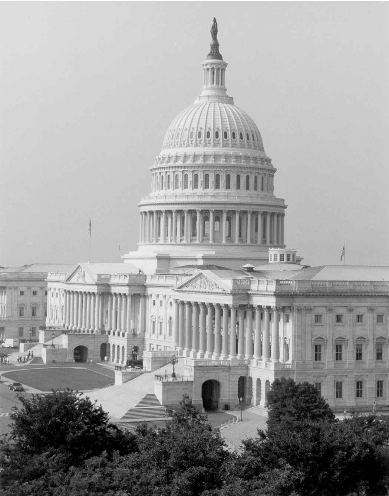

美国国会大厦穹顶高耸，立柱以大理石制成，走廊中的塑像一字排开，游客们或许将其视为美术馆和历史博物馆，而不会意识到它首先是国会所在地。为了容纳大批参议员、众议员、工作人员、记者、游说人员以及满怀好奇的游客，国会建筑群不断扩建成以通道连接起来的众多办公大楼。内战士兵曾在国会外的草坪上操练，示威人群曾在此进行抗议，就职典礼观众也曾蜂拥而至。国会山有时弥漫着集市的味道。这里曾举行教会礼拜、葬礼、拍卖以及戏剧表演，商贩在走廊兜售水果、雪茄、糖果、馅饼、三明治和纪念品，直至1890年议长托马斯·B.里德（缅因州共和党人）禁止小商小贩将雕像大厅作为有利可图的市场。几十年后，国会山依旧可以被描述成“楼宇之中的城市”，这里的建筑群囊括了餐厅、银行、理发店、运动场馆、图书馆、邮局、地铁线路以及独立的电力设施。
参、众两院均坐落于国会山，如同人文学院和工程学院并存于同一所大学校园；它们比邻而建却各自为营。两院以圆形大厅地面正中的星形标志为界。参、众两院各据国会大厦一端，即便长期使用者有时也可能在另一侧迷路。对“另一院”的不满的确时不时露出端倪，比如1999年总统弹劾审判期间，众议院领导层就为不得不登上“奥林匹斯山”而怨声载道。

图11 国会大厦是美国民主制度最易识别的象征
当皮埃尔·朗方在1791年为日后的国都勾画蓝图时，他将称为詹金斯山的高地视为“静候不朽丰碑的高台”。为使稚嫩的共和国追溯到罗马源头而改名为国会山 [17] 的高地成为美国国会大厦所在地，大厦壮观的穹顶象征着美国民主制度。一位资深众议员督促新议员无论何时前往议会大厅投票都要仰望穹顶。他建议道：“一旦它不再令你起鸡皮疙瘩，转天就去起草辞职信吧。”
国会大厦为人熟知的外观事实上是随时间逐渐形成的，它伴随着国家共同发展。当国会于1800年迁往华盛顿时，仅有方方正正的参议院侧翼完全建成，其间挤进参、众两院和最高法院以及国会图书馆。众议院侧翼于1807年完工，在圆形大厅建成之前通过木质步道连接参议院一侧。1814年8月，英军入侵并纵火焚烧国会大厦，是时国会正在休会。一场夏季风暴挽救了外墙，但烈火损坏了大部分内部建筑。最初的大厦仅残留下一处前厅，其内有一排“玉米芯石柱”，建筑师本杰明·亨利·拉特罗布为这些经典的罗马石柱添加上玉米芯形状的装饰，使其具有了美国特色。
国会大厦在1820年代进行重建，效仿罗马帕特农神庙修建了较低的穹顶。在随后的30年中，西部新州的立法者纷至沓来，使大厦人满为患，要求修建新的侧翼以容纳急剧扩张的议事大厅。新建筑使过去的穹顶不成比例，于是以庞大的铸铁穹顶取而代之。大厦以砂岩、大理石和涂刷为白色的铸铁建成，呼应着美国国玺上的箴言：合众为一（E Pluribus Unum ）。
国会大厦由当地奴隶修建而成，这些奴隶是从奴隶主那里雇来的。哥伦比亚特区当时还保留着奴隶制，直至1862年国会才予以废除。穹顶上矗立的自由之神铜像由奴隶菲利普·里德铸成，雕像于1863年安装到国会大厦穹顶时，里德也获得了自由。外来石匠和技工也为大厦做出了贡献。这些旧世界的艺术家用新世界的形象装点大厦内部。美洲印第安人令他们痴迷，遂经常出现在国会大厦的艺术画作当中，但奴隶制充满争议以至难以描绘。1862年林肯签署第一份《解放黑人奴隶宣言》后不久，画家伊曼纽尔·洛伊茨在巨幅壁画《通往西部的帝国之路》（Westward the Course of Empire Takes Its Way ）中描绘了一名黑人开拓者，而在此之前，非洲裔美国人从未出现在国会大厦的艺术作品当中。
内战后数年间，园林设计师弗雷德里克·劳·奥姆斯特德以庄重的景观对国会大厦园地进行美化，由他修建的阶梯平台使国会大厦西侧外观更加威严（这里如今被用作总统就职仪式观礼台）。站在今天的东侧前广场，最初的国会大厦之中的政府机构几乎尽收眼底，其中包括最高法院和国会图书馆。1814年国会大厦遭到焚烧也殃及国会图书馆。国会遂购买前总统托马斯·杰斐逊的私人图书馆作为替代，杰斐逊的兴趣爱好不拘一格，使国会不仅仅拥有了一座法律图书馆。国会图书馆曾位于参、众两院之间，横跨国会大厦西侧前厅，占据其中的三层楼。木质书架即使没有英国人兴风作浪也还是引发了几场大火。受到1850年代安装的防火铸铁书架的启发，体积比最初扩大三倍的新穹顶也采用铸铁建成。这种轻型材料使旧有的墙体得以撑起体积更大的穹顶。
国会大厦的外观如同一座罗马神殿，而19世纪意大利画家康斯坦丁诺·布伦米迪明快的室内壁画使其宛如意大利教堂。遭受政治流放的布伦米迪于1855年为国会大厦带来他在梵蒂冈学到的壁画绘制风格。负责扩建国会大厦的军事工程师蒙哥马利·C.梅格斯最初心怀疑虑，却终为布伦米迪灵巧的绘画和生动的着色倾倒，它们在石膏和油漆风干后保留了下来。布伦米迪获得了在圆形大厅穹顶以及众多委员会室和大厅绘画的合同。他主要在参议院一侧作画，因为众议院认为天花板作画是反民主之举。1970年代，众议院的态度有所缓和，当时艺术家阿林·考克斯从美国历史中选取题材装饰众议院多处大厅。
参、众两院议事大厅是供议员们辩论、投票的地方，他们云集于此交流沟通，这些大厅并不华丽，却庄重高贵。议事大厅经常只有寥寥几位议员出席，但无论何时举行投票，议员们都会接踵而至，享受由繁忙日程中抽身而在喧闹声中驻足相谈的难得机会。这些亲切随意的插曲被比作“没有鸡尾酒的鸡尾酒会”。他们济济一堂，分享见闻并互诉轶事，同时也在打量彼此的兴趣和个性，达成各类协议或制定各种策略。
参、众两院曾各自占据国会大厦中的若干议事大厅。1800年，参议院在其一侧底层一间面积较大的房间开会，众议院则挤在最终被一位参议院领袖占据的几处房间中。门外的铜匾记录着众议院占用这些房间时的首要任务：众议员们不得不在选举人团票数不分胜负的托马斯·杰斐逊和阿龙·伯尔中确定总统人选。1807年，众议院迁入本院的议事大厅，这间气派的大厅如今称为雕像大厅，启用之时曾是全美最大的公共空间。众议院在1857年前一直在此开会，在此期间众议员从142名增加到237名。参议院一侧在同一时期经历重新改造，参议院迁到位于二楼的新议会大厅，底层原有空间交予最高法院使用。
参议院旧有的议事大厅在1810年时最初供34名参议员使用，1859年参议院搬离这一大厅时议员人数已经翻倍。同年1月，参议员迁入当今的议事大厅。日后的北部联邦和南部邦联领袖在当时并肩而行，其中包括杰斐逊·戴维斯、亚伯拉罕·林肯的两位副总统以及内战时对立双方的内阁和军方成员。一行人中走在最前面的是副总统约翰·C.布雷肯里奇，他是玛丽·托德·林肯的表亲。布雷肯里奇随后成为南方邦联军官，并于1864年领导了对华盛顿的突袭。布雷肯里奇及其邦联军队被联邦军队击退前，已经前进到足以看到国会大厦全部穹顶的地方。
众议院议事大厅糟糕的音响效果使人们很难听清发言人的声音——许多步入其间的优秀的演说者，连同悲痛哀叹的议员们，他们的话语再也无法听闻。相反，参议院旧有议事大厅如同剧场一样完备的音响效果为内战前三十年参议院“辩论的黄金时代”增光添彩，是时韦伯斯特、克莱以及卡尔霍恩曾侃侃而谈。然而，崭新、宽敞的参议院议事大厅的音响再也没有如此清晰，辩论的质量也受到影响。玻璃天花使光线得以透入，却吸收掉声响。对辩论进行报道的记者们不得不在议事大厅中来回奔跑才能听到一场辩论的正反双方。1950年以石膏天花取代玻璃天花并没有使音响效果得到明显改善，至1971年最终安装扩音器后，参议员们的声音才得以听清。众议院议事大厅同样经历了改造，议员们在大厅前端低层下沉的发言席发言时会使用扩音设备。
任何一处议事大厅都不允许参观者倚靠在楼厅上，这一禁令可以追溯到1916年12月，当时几位倡导妇女选举权的激进人士从众议院议事大厅的楼厅上抛下写有“总统先生，你要怎样解决妇女选举权问题？”的横幅，打断了伍德罗·威尔逊的国情咨文演讲。其他示威者也曾将国会大厦作为标志性背景。环境保护主义者曾向国会大厦庭院倾倒成吨煤炭，农夫们曾在草坪上放羊，一个试图保护濒危野生动物的团体更是将一头猎豹带到国会听证会上。国会自身也会参与具有象征意义的活动。废除婚姻税罚金的法案得以通过之后，共和党人曾让一对新人携法案进入白宫，而民主党人在那之后曾将一份能源法案放在一辆节能高效的混合动力汽车中呈递给总统。
参、众两院旁听席向参观者开放，而技术拓展了全国和全球范围的听众群体。国会大厦于1923年开始进行对外广播，电视在1947年得到采用。然而，议场议程始终受到限制，直至参、众两院分别在1986年和1979年允许对其进行电视播放。一些议员曾后悔允许电视摄像机进入，他们抱怨电视加剧了党派偏见和冲突对立，原因在于议员们如今觉得他们不得不就每项事务发表看法并回答每一项质询。
起初，任何人都可以在当天开会前于参、众两院议场逗留。一位参议员曾抱怨道，他不得不以手肘挡开人群挤向自己的位子，随后却发现已经有人坐在那里。尽管参议员们不愿做出任何得罪选民的事情，最终却还是禁止参观者入内，只有记者例外。记者们只能在当日会议前进入参议院议场听取领导层就当天日程进行的简要介绍（在众议院，相似的简要通报在议长办公室中举行）。这一沿用棒球赛赛前广播所用名称称为“休息室谈话”的特权也曾被取消，直至连工作人员都需要获得特别批准才可以进入议场。进入议场的唯一其他方式就是当选议员。
国会山对国会议员和其他人员区别对待。标识声明，电梯和休息室仅限议员或仅限参议员使用。餐厅和停车场会为议员们预留位置。确立这样的制度是为了帮助当选者开展工作。每次选举后，国会大厦的警员、电梯操作员以及其他工作人员都会收到照片提示卡，帮助他们识别新议员，而全体人员都会不厌其烦地提供协助。曾有一位前往国会大厦投票的新任众议员在路边等待绿灯，却没有意识到警察正在为投票中的议员阻拦车辆。这位警官解释道：“您可以畅行无阻。”
国会是国家的写照，尽管并非完全对应。议员队伍诚然也吸引到医生、牧师、军官和警察、记者、运动员、农场主以及一些蓝领工人，但律师和企业家的数量总是占到更大的比例。在历史上相当长的一段时期内，国会都以白人和男性为主导。妇女和少数族裔在参、众两院中的人数不断增加，但依然不及所占全国人口比例。宗教信仰已经更加多元化，新教徒依然是人数最多的群体，但相对于不断增加的天主教徒和犹太教徒，其比例却在缩减。2007年，首位穆斯林被选入众议院，佛教徒在2008年第一次被选入众议院。多数议员在进入国会前都曾担任公职。众议员通常在州或地方政府供职，而半数参议员都曾在众议院效力。国会工作人员的职位已经成为跳板，越来越多的工作人员都在竞争雇主留下的空缺职位。
宪法最初规定新一届国会于12月第一个星期一召开，也就是选举结束后13个月（宪法第一条第四款）。当时的会期一般会从12月一直延续到春季。1933年，第二十条修正案将开会日期推迟到1月3日，但即便在这一时期，国会依然只开会半年。议员们会携家眷共赴华盛顿，休会后会整理行囊回家待上半年。他们的孩子会返回本地学校，议员们会重拾律师工作或其他商业活动。伴随国会会期延长至一年，更加严格的道德规范也对议员们在其公职之外可以做的工作加以约束。成家不久的议员们催促领导层提前宣布休假时间表，1971年，国会通过一项法律，规定在8月期间提供年度休假机会（在立法事务需要额外时间的情况下可以推迟）。参、众两院将放假时间安排在全国性假期和宗教纪念活动前后，允许议员与家人和选民共度这段时间。他们也可以作为国会代表团（congressional delegations）成员，也就是所谓CODELs前往海外。这些实地考察使议员们得以了解世界各地的问题和领导人，但也使他们被指责由纳税人付费“公费旅游”。
国会议员们表示，他们的工作当中最难以忍受的部分是充当“他人日程的俘虏”。工作人员会为他们备好日程，其中插入15分钟的超出时间，并提前安排好听证会、会议以及拍照活动；但召集他们前往议事大厅投票的铃声可能随时响起，打断他们正在做的其他任何事情。参议员保罗·拉克索尔特（内华达州共和党人）在退休后评论道，他最想做的是“悠闲地吃午餐，在正常的时间回家吃晚饭，不需要被迫‘跑到’参议院议场投票，‘日程卡’上不会写满从清晨直至深夜的预约安排”。
定期返回所在各州意味着议员们的大量时间都会在飞机上度过。国会散会时，可以看到议员们背着西装袋冲过华盛顿各机场大厅。工作日被压缩到周二至周四，在此之前相对平静的日子中，众议员们设法遵循一条规则，即政治对手在下午五点之后可以是朋友，而无须考虑政党。众议员吉恩·斯奈德（肯塔基州共和党人）曾趁着“欢乐时间”争取对其选区一处公路桥的支持。斯奈德通常在晚间同属于民主党的议长蒂普·奥尼尔打牌，据他回忆，议长在一局结束后把脚放到斯奈德的桌子上说道：“吉恩，你的桥没问题了。”
随着工作周的缩短，加上更多国会议员的家人待在本州，议员们在业余时间进行交际的机会也已减少——仅剩祈祷早餐会、运动场锻炼时间或偶有的高尔夫球赛。即便政党打算“就当日各项事务打赌”而举行的每周例行午餐会，其社交性也在降低，党派性却在加强。众议院中职责较少的年轻议员会前往众议院体育馆的篮球场，那些去议场投票前匆忙冲凉的议员会被贴上“湿头”的标签。参议院提供了一处健身俱乐部，其内配有健身器材和蒸汽浴室。
这些设施曾经仅为男性保留。比如，众议院运动场馆建设之时只有一处男更衣室，但1965年警卫官错将落成仪式邀请发送给所有当选众议员。当女议员身着运动装出席时，男议员们却不愿为她们留出空间。自从1917年起，妇女便已入选国会，但国会妇女事务党团直至1977年才建立起来。最初只有15名成员。1973年进入众议院的帕特里夏·施罗德（科罗拉多州民主党人）发现，直至一些资深女性议员退休时，新一代才组建起女性党团（相比于被当作议员来对待，老一代对于被作为女性加以对待很是敏感）。
伴随更多女性赢得选举进入国会并由女性担任国会工作人员，着装规则也已发生变化。曾有一位大胆的众议院门卫提醒众议员贝拉·艾布札格（纽约州民主党人），规则不允许她在众议院议事大厅佩戴具有她个人特色的宽边礼帽。规则并没有明确禁止女性穿着便裤或套装，但男性曾看不惯这种装扮。参议院议事大厅女性工作人员曾对周六的会议翘首以盼，在此期间男性倾向于以更为随意的装束出席，她们向同时出席的女参议员寻求支持，在约定的某个周六全部身着便裤。此举没有遭到异议，从此之后，穿套装还是裙装便成为个人选择。
国会黑人党团创建于1971年，其成员在随后的30年中增加了三倍，其中一些成员继而获得政党领导层职位并担任众议院一些重要委员会的主席。参议院选举在各州举行，选举产生的少数族裔参议员为数甚少。一些州曾重新划分选区以使众议院具有更强的种族和族裔多样性，重新划分的选区边界提升了西班牙裔和非洲裔候选人的机会。
担任有权有势的众议院规则委员会主席的查尔斯·兰格尔（纽约州民主党人）曾经指出，许多非洲裔美国人占压倒优势的选区事实上具有“非竞争性”，这催生了一些稳定的议席，使少数族裔议员得以积累资历并获得委员会主席资格。同样的动因曾在很多方面使南方白人得以主导众议院并阻碍民权立法的通过。当这些南方人退休或改换党派时，便为少数族裔参选敞开了大门。1965年《选举权法》通过鼓励各州将黑人选民集中到黑人数量超过65%“绝对多数”选区而加速了这种趋势。许多南方共和党人支持这种变化，原因在于民主党选票集中在这些非洲裔美国人选区，导致国会中南方民主党议席的实际损失。然而，在随后的几年中，一些黑人选区的西班牙裔人口不断增长，这使它们不再缺乏竞争。
国会黑人党团的许多中坚成员都是从民权运动中涌现出来的，他们在其中带领人们与根深蒂固的政治权势集团作斗争。他们曾争取平等权利，反对美国支持南非的种族隔离政权，并将这些斗争带到国会，但他们认识到，为了使法案获得通过，他们需要通过妥协来收敛激进作风。成为众议院军事委员会主席的反战活动家罗恩·德勒姆斯（加利福尼亚州民主党人）评论道：“如果你在众议院待上足够长的时间，你就会了解它的规则和传统，并且最终会明白，始终作为局外人是无法促进任何一项信条的。我的选民如同其他所有选民一样将我送到华盛顿制定法律。我必须尽我所能回馈他们。”
新任国会议员的首要任务是雇用工作人员并设立办公室。一些议员会引进家乡的竞选班子；其他议员则设法雇用那些已经在华盛顿取得经验的人们。无论以何种方式，议员的工作班子中大都是具有政治头脑的年轻人，他们在立法分支升任要职的速度恐怕会超过在几乎任何其他地方。他们最初可能担任实习生、随从或国会研究人员，又或者直接从大学接受国会的工作。他们被要求长时间工作，但薪水很低，几年后可能因精疲力竭而转行。幸运的人将加入委员会工作班子，由此得以精通某项事务、获得更高的收入且不受选举结果的影响。他们通常默默无闻，不辞辛劳地推进雇主优先考虑的事务。一名20多岁的工作人员曾说：“国会山始终持续运转，作为年轻的工作人员，你也不能停下来。”
历史上很长一段时间，国会曾依靠行政分支的一些部门形成资料并撰写立法和报告草案。然而，随着20世纪行政和立法分支之间的关系愈加紧张，国会试图寻求更加独立的资料来源和援助渠道。进步时期，国会于1914年在国会图书馆设立立法咨询服务部，随后拓展为国会研究处，该部门提供政治立场中立的问题简介，并向议员和委员会借调工作人员以对提供支持的网络进行巩固。立法分支的其他机构还包括为国会从行政分支取得的预算信息提供现状核实的国会预算办公室，以及调查行政分支执法情况及国会拨款支出情况的政府问责署（前身为审计总署）。立法分支的另一个组成部分是出版《国会记录》及大量其他政府出版物的政府印务局。
1946年《立法机构重组法》为委员会设立了第一批专业人员班子，同时允许议员扩大私人雇员队伍。每位议员可以雇用一名行政助理管理工作班子，并可雇用若干立法助理处理特定领域的立法事务，由他们研究、起草并追踪法案以使议员保持对法案的了解。议员也向其效力的委员会指派工作人员，派他们出席议员可能错过的会议，与其他工作人员商议修正案，或就即将进行的投票向议员提供建议。这些工作人员被称为“非选举的立法者”和“实际参议员”。泰德·肯尼迪在其47年的参议员生涯行将结束之际评论道，法案起草和商议过程中“95%的实际工作”都在由工作班子完成。但一纸选举证书还是将他们与能量巨大且权力在握之人区别开来。
议员与其工作人员之间的关系因个人风格而异，折射着这项工作的日常压力以及最初使他们得以入选的进取心。一些立法者受到忠诚的工作人员的爱戴；其他一些则令人畏惧。一些议员可以长期留住一批工作人员，其他议员却在经历人员的持续变动。林登·约翰逊（得克萨斯州民主党人）以压迫工作人员闻名，他可能会当众羞辱为他工作的人，但依旧设法保持他们的忠诚度，关键在于他时常如逼迫他们一样竭力逼迫自己。参、众两院议员在他们认为恰当的范围内支出他们收到的办公经费。他们可能以较高的薪水雇用较少的助手以保持稳定性，也可能以较少的报酬雇用规模较大的工作班子。年轻的工作人员接受这些苛刻的工作为的是获得几年国会工作经验，将其作为争取政府内外高薪职位的跳板。
日积月累的立法工作量以及潮水般涌入的选民信件，都导致国会工作人员数量与日俱增。参、众两院分别在1909年和1908年启用国会大厦北侧及南侧的第一处办公楼。办公楼为越来越多的公开听证会和工作人员提供了空间，也为议员与选民见面提供了更多的机会。第一处众议院办公楼建成后以议长约瑟夫·坎农的名字命名，设计上沿用古典风格，与国会大厦相得益彰。这处办公楼由通道连接国会大厦，最初有397间办公室，议员人均一间，另有14间委员会室。第二处众议院办公楼建成于1933年，以议长尼古拉斯·朗沃斯（俄亥俄州共和党人）的名字命名，于1965年启用的第三处办公楼以议长山姆·雷伯恩的名字命名，为每位议员日益扩充的工作班子提供了办公套间。
第一处参议院办公楼（以窘困的缩写名称SOB [18] 为人熟知）采用众议院办公楼的外观设计，稍晚以理查德·拉塞尔的名字命名，因容纳较少的议员，室内更显宽敞典雅。众议院办公室采用的木质墙板在参议院办公室中改为大理石，栏杆由铁质改为铜质，饰面薄板换成了实心红木。参议院办公室最初由两个房间组成，一间供议员使用，另一间供工作人员使用。第二处参议院办公楼于1958年建成，以参议员埃弗里特·M.德克森（伊利诺伊州共和党人）命名，第三处建于1983年，以参议员菲利普·哈特（密歇根州民主党人）命名。在每一处增建的办公楼中，分配给每位参议员的房间数量都在急剧增加。如今一处典型的办公室连接起来的空间，曾经能容纳六名参议员及其工作人员。
参、众两院办公楼位于国会大厦对面，曾需要议员不断从办公室前往议事大厅投票再原路返回。1890年代，国会大厦在托马斯·爱迪生的监理下完成供电布线，并安装了召集议员投票的电铃。1912年，参议院在其办公楼和国会大厦之间铺设了第一批地下轨道电车 [19] 作为水平运输工具。如同学校课间换教室，标志投票的长铃声催促参议员由办公室和委员会室迅速拥入电车。参议员诺里斯·科顿（新罕布什尔州共和党人）曾津津有味地讲述一名新任侍从陪同一位老妇人进入旁听席的故事。她想要知道为何许多电铃一直在响。侍从答道：“我不大确定……也许是有人逃跑了。”
除议员和工作人员之外，定期前往国会山的其他人员还包括游说人员和新闻记者。“游说人员”一词——因办公室高度集中在K街，有时也称为“K街游说人员”——已经与特殊利益集团和令人生疑的秘密交易密不可分，但游说人员乃立法程序的合法组成部分。立法者们在19世纪这个人们手持火把参加游行及选举竞争紧张激烈的年代，很大程度上从他们所属的政党当中获取讯息。选民投票率在1896年达到顶峰，但从20世纪起持续减少，是时民众开始结为私人利益集团以寻求更为直接的方式向立法者施加影响。这些团体向立法者们提供信息，立法者则依靠这些信息起草法律或竞选连任。
游说人员或许曾经担任立法者或国会工作人员，他们因此了解国会，可以就特定问题提供专业意见。他们可能代表公司、工会、地方政府、大学、教师、医院、老兵、农场主、牧场主、石油和天然气生产商、消费者或不计其数的其他群体。其中一些相比于其他游说人员资金来源更为充裕，但他们都在筹集竞选经费供议员竞选连任中扮演日益重要的角色，这反过来增强了他们对立法者和立法进程的影响。众议员罗曼·马佐利（肯塔基州民主党人）曾指出，提供资金的人能得到议员和工作人员的关注，这是亘古不变的真理。“他们有渠道，而渠道就是一切。渠道就是权力。渠道就是影响力。”
游说人员有种“铁三角”理论，即当三重因素都在发挥作用时，立法获得成功的机会最大：相关委员会的主席站在他们一边；相关行政机构中有高级别官员关注该项事务的立法及其实施；拥有可以从国会以外为该项事务动员起来的一批强有力的选民。游说人员也会向议员和工作人员提供详细的背景信息，他们与正在制定法律的这一领域的领袖们建立联系，以使国会及时了解游说人员所谓的“经济和政治现实”。
每年用于华盛顿游说活动的经费已经达到数十亿美元，游说人员的数量也已经增加到数千名。2006年，围绕杰克·阿布拉莫夫的游说丑闻遭到曝光，他所代表的印第安部落急于阻止国会向印第安赌场营业收入征税。阿布拉莫夫拉拢国会和政府要员，为他们前往苏格兰打高尔夫球支付旅费，以体育赛事豪华包厢款待他们，并为他们参加竞选注入资金，以此换取他们的立法支持。他向客户收取高额费用，用以支付他与高层人士的接触。政府进行了调查，阿布拉莫夫承认犯有欺诈及逃税罪。同他有联系的几位议员失去竞选资格，国会也立即对游说人员的合法活动做出严格限制。
议员们坚持认为，最能起到实际作用的游说人员是“身在家乡的那一部分”。几乎没有哪些事务是足够强硬地向国会提出的，以致民众不大会就某一观点踊跃发声，而民意调查专家表示，风平浪静是难以测到风向的。如果公众看起来漠不关心，游说人员将设法掀起基层运动，立法者们却因这种“人造草根”游说活动的人为特征而对其不屑一顾。议员们意识到，游说人员乃“雇佣枪手”，他们收取报酬，通过精心策划公共宣传并同国会议员碰面来支持或反对某项事务。但为了构建可行的公共政策，他们必须同国会之外的群体和利益集团合作。通过游说人员听取各种群体意见，有助于那些起草法律的人们了解可能发生的后果，并调整法案以避免灾难。
一些国会议员通过“与华盛顿唱反调”竞选连任，但他们当中大量议员在退休时还是留了下来，这种情况被归因于“波托马克热” [20] 。许多议员成年时的大部分时间都待在首都，他们习得的知识技能在这里比在家乡更能有效发挥作用。据一项研究统计，1998—2004年，全部退休国会议员中有43%与他们的高级工作人员一样参与到游说活动中。道德改革禁止他们在离任后两年内游说国会，但他们将这段强制的冷静期用来提供咨询而非进行任何直接游说。游说披露法规也要求，为影响立法而联系国会议员之人须就其雇主、报酬及做出的贡献向政府官员提交一份公开报告。
成为游说人员的前议员享有同国会老友之间的开放政策，尽管他们也发现国会中的朋友会收取竞选献金。正如一位国防游说人员的解释，这样的献金被视为一种投资，用来“以非正式的方式”将更多时间用于顾客的代表身上。有鉴于此，游说团体会为议员连任竞选组织筹款活动。游说人员时常试图使议员帮助他们为家乡的项目争取专项拨款，而议员随后可以在连任竞选期间将这类项目作为政绩，这对于在任者而言则是锦上添花。
游说人员当中包括政府机构和军事部门的一些联络人员。他们引导要员跨越国会的重重障碍，协助他们准备证言并为他们无法回答的问题收集信息以做出回应。军队联络人员负责回答国会议员发送给他们的成千上万的选民询问，通常涉及调任、奖励及薪资问题。联络官会陪同议员参与实地调查任务，甚至随同他们深入战区。他们最重要的工作是维护同国会之间的良好关系，从而使他们的所属部门持续获得足够的拨款。
其他一些以国会身份徽章为傲的人还包括在记者席外工作的大批记者、播音员及摄影师。他们的身份证明使他们得以聚集在走廊上采访从会场上走出来或前往议事大厅投票的议员。一些记者常驻国会大厦，在这里形成对国会运转方式的深刻认识，但他们需要培养固定的信息来源，这有时会损害他们对信息源秉笔直书的能力。其他一些记者只在某些新闻得到披露之际前往国会山，他们因此可以更加独立，但对于这一机构的把握却可能相对薄弱。渴望正面报道的参、众两院议员会雇用经验丰富的记者担任媒体秘书，这有助于促进同记者团的关系。国会议员们会消费大量纸质或广播报道，包括三份分发给所有国会办公室的私人出版的专业性报纸：《点名报》（Roll Call ）、《国会山报》（The Hill ）以及《政治报》（Politico ）。议员及其工作人员也会密切关注问题导向的《国会日报》（Congress Daily ）和《国家杂志》（National Journal ）。
研究人员是国会山群体的另一个组成部分。美国政治学学会从1953年开启一项年度国会研究项目，将政治学者、记者、博士学位获得者及国外学者送往参、众两院办公室，使他们作为国会工作人员亲身了解立法程序。美国政治学学会最为杰出的成员迪克·切尼曾于1968年作为研究人员来到华盛顿。他与众议员唐纳德·拉姆斯菲尔德（伊利诺伊州共和党人）建立起联络，后者帮助他在七年时间内迅速升任白宫幕僚长。切尼继而担任众议员、国防部长和美国副总统，但他再未返回威斯康星大学取得博士学位。国会黑人党团发起的一项奖励计划旨在促进国会雇用更多非洲裔美国人担任工作人员。妇女研究与教育学会向作为国会工作人员参与妇女相关政策事务的男性和女性研究人员提供资助。科学家和工程师可以向美国科学促进会争取奖金，在决策过程中提供科学领域的专业知识。美国心理学会招募研究人员推动政府更加有效地利用心理学知识。大学教员也利用学术休假担任国会研究人员，他们起草法案，卷入立法和政治浪潮，最终作为有影响的工作人员在国会山常驻数十载。
一些学者也会参与国会竞选。戴维·普莱斯（北卡罗来纳州民主党人）曾在杜克大学担任过20年政治学教授并撰写了几部有关国会的著作，随后通过竞选获得众议院议席（他的电视广告以教室为背景拍摄特写）。在他看来，长年教学工作及国会山暑期实习帮助他为这项工作不寻常的要求做好了准备。普莱斯被任命到适合他的委员会，但他已经对国会诸多委员会做过研究并撰写相关著作，积累之久足以使他将目光投向拨款委员会，该委员会掌握资金，使其“权力远超任何其他委员会”。参议院的杰出学者丹尼尔·帕特里克·莫伊尼汉（纽约州民主党人）曾获得社会学博士学位，他在担任三届参议员并任金融委员会主席前，曾主持哈佛大学和麻省理工学院联合城市研究中心。
除此之外，每天还有来自全国和全球各地的大量参观者。美国公民一生中平均两次参观美国国会，一次在孩提时与家人或班级同行，另一次作为父母带家人前来。直至1970年代，美国公民仍可以在国会会期任何时间随意进入国会大厦并徜徉其间而几乎不受任何限制。1971和1983年激进组织在国会大厦安放炸弹，1998年一名患有精神分裂症的持枪者射杀两名国会警察，连同2001年的恐怖威胁，都在相当程度上使安保得到强化，所有入口都安装了金属探测器，没有携带政府徽章的人不得进入大楼的某些部门。但相比于多数其他政府机构，国会大厦对于公众的开放程度始终更高。参观者是受到欢迎的，因为他们是选民和投票人。阳光规则要求委员会听证会向公众开放，议员办公室会向选民提供参、众两院旁听席的免费入场券。截至20世纪末，每年有超过300万民众参观国会大厦。
为管理人流，东侧前广场地下修建了庞大的国会游客中心。其间的解放大厅中矗立着19英尺高的自由女神铜像石膏模型。等待游览国会大厦的访客可以参观参、众两院及国会大厦历史博物馆并观看介绍影片。透过天窗，他们可以仰望到美国代议民主制度最为显著的标志——国会大厦穹顶。
《华盛顿邮报》的一篇社论在2008年游客中心启用时称“国会并不完美”。“535名议员对于勇气的全面展示不如我们所希望的那样频繁。但他们慷慨资助的建筑群的确向历史成就表达了敬意，这些成就的影响传播到了国会山以外很远的地方。”展示勇气这一观念时常涉及挑战公共舆论，这一特征使菲利普·哈特（密歇根州民主党人）被公认为“参议院的良心”。哈特在其所在州枪支持有者和猎手占有很大比例的情况下支持更为严格的手枪立法，并在反垄断问题上挑战密歇根的主导产业——汽车制造业。然而国会的一个根本矛盾在于，议员被选举出来是为了推动其选民所关心的问题，而一旦他们如此行事，却可能被批评为地方保护主义。但当他们站在公众舆论的对立面时，便会有失去议席的风险。从个人角度出发，他们关心连选连任及其选区和所在州的利益；从集体角度出发，他们必须将本地关注的那些问题融入国家立法当中，为公共利益寻求共同基础，进而实现“合众为一”这句箴言。